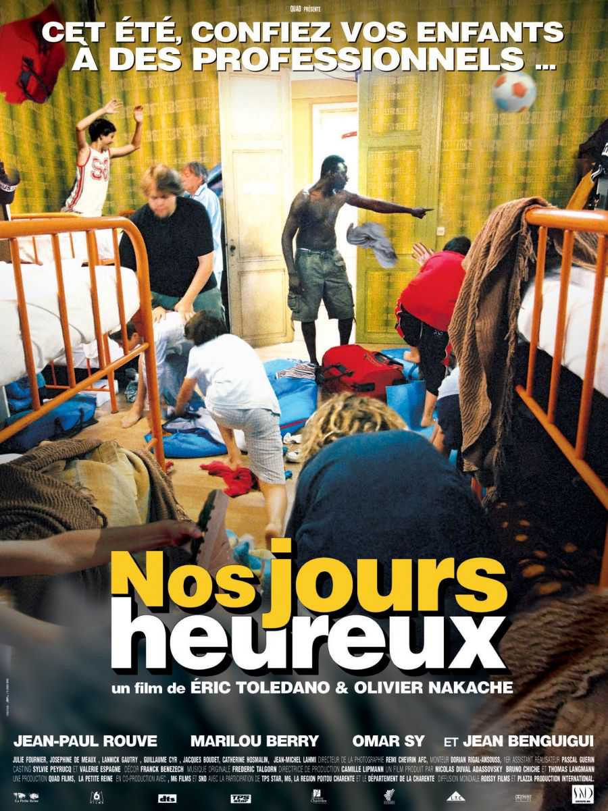

After 6 years working as a consultant in management and organization, I decided to learn coding. After that I would like to work in small companies/start-ups.
|  |
Nos jours heureuxVincent Rousseau dirige pour la première fois une colonie de vacances et se retrouve plongé pendant trois semaines dans l'univers des colos avec petites histoires et gros soucis à la clef! Vincent se retrouve alors confronté à la vie mouvementée du camp, de ses animateurs plus ou moins professionnels et des ados pas toujours évidents à gérer... |
RadiostarsEn plein échec professionnel et sentimental, Ben, qui se rêvait comique à New York, est de retour à Paris. Il rencontre Alex, présentateur-vedette du Breakfast-club, le Morning star de la radio. Avec Cyril, un quadra mal assumé, et Arnold, le leader charismatique de la bande, ils font la pluie et le beau temps sur Blast FM. Très vite Ben est engagé : Il écrira pour eux. Alors qu’il a à peine rejoint l’équipe, un raz de marée frappe de plein fouet la station : l’audience du breakfast est en chute libre. C’est en bus qu’ils sillonneront les routes de France pour rencontrer et reconquérir leur public. Pour ces Parisiens arrogants, de ce road trip radiophonique naîtra un véritable parcours initiatique qui bousculera leurs certitudes. |
|
Les visiteursComment en l'an de grace 1112 le comte de Montmirail et son fidele ecuyer, Jacquouille la Fripouille, vont se retrouver propulses en l'an 1992 apres avoir bu une potion magique fabriquee par l'enchanteur Eusaebius leur permettant de se defaire d'un terrible sort.. |